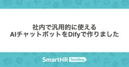
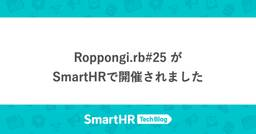
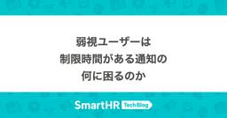
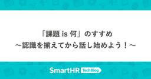
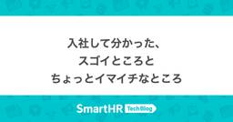
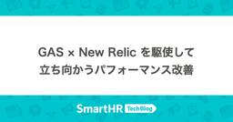
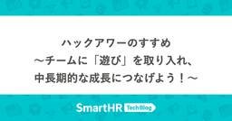

SmartHR Tech Blog
https://tech.smarthr.jp/
SmartHR 開発者ブログ
フィード

社内で汎用的に使えるAIチャットボットをDifyで作りました 1
1
SmartHR Tech Blog
こんにちは！情報システム部コーポレートエンジニアのyoyogiです。 昨今、AI技術の進化は目まぐるしく、みなさんも日常的にAIサービスを活用されているかと思います。 SmartHR社内でも、AIサービスの利用方針が策定され ( AIサービスの利用方針を定めました - SmartHR Tech Blog )、ChatGPT Team等のAIサービスの活用が進んでいるものの、従業員が日常の業務でいざAIサービス（主に、大規模言語モデル）を利用したいと思った際に、扱う情報の考慮が求められる為、なかなか気軽に使えない状況でした。 そこで今回、社内のAI活用をさらに促進するために、全従業員がより安全か…
6時間前

Roppongi.rb#25 がSmartHRで開催されました 1
SmartHR Tech Blog
このエントリは、SmartHR Advent Calendar 2024シリーズ2の19日目の記事です。前の記事はotaniさんの"「顧客の要望を鵜呑みにするな」って言うけどさ"でした。 こんにちは！プロダクトエンジニアのshinokuです。 この記事は、Roppongi.rbに協賛し、SmartHR本社8Fのイベントスペースを会場提供した際のレポートです。 Roppongi.rbとは Roppongi.rbは六本木周辺のRubyistが中心となりRubyistのためのミートアップを企画したりするRubyコミュニティです。 roppongirb.connpass.com SmartHRでの開催…
12時間前

SmartHR における、ESLint v9 と Flat Config への移行事例 2
SmartHR Tech Blog
本記事は、SmartHR Advent Calendar 2024 シリーズ 1 の 19 日目の記事です。 こんにちは。SmartHR プロダクトエンジニアの sasaki (@s_sasaki_0529) です。 この記事では、SmartHR が共通で利用する ESLint の設定パッケージを、ESLint v9 と Flat Config に対応させた取り組みを紹介します。 ESLint とは ESLint は、JavaScript や TypeScript を中心に幅広く使われている静的解析ツール（Linter）です。コード品質やスタイルの不整合を自動検出し、大規模なプロジェクトや、多…
14時間前

弱視ユーザーは制限時間がある通知の何に困るのか 1
SmartHR Tech Blog
こんにちは！アクセシビリティテスターのgamochanです。 アクセシビリティテスターとは、障害のある従業員がプロダクトを試験し、障害当事者という立場を活かしながら開発側にフィードバックをすることでプロダクトのアクセシビリティ向上を目指す仕事です。詳しくは アクセシビリティテスタープロジェクト | SmartHR ACCESSIBILITYをご覧ください。 私自身も弱視（ロービジョン）で常に拡大鏡（ズーム機能）を使用しています。 拡大鏡を使用した際の見え方については次の記事で説明しています。 gamochan.com 今回の記事では制限時間があるコンポーネント、特に通知によって弱視ユーザーが困…
2日前

東京Ruby会議12運営おしょうゆ＆なっちゃんインタビュー ── 【前編】下見もせずに会場予約、見切り発車で動き出す 13
SmartHR Tech Blog
2025年1月18日に、東京Ruby会議12が開催されます。2016年以来の約9年ぶりの開催です。SmartHRは、東京Ruby会議12に協賛します。そこで、東京Ruby会議12を最大限に楽しんでいただくべく、実行委員長のおしょうゆさん（@osyoyu）と副実行委員長のなっちゃんさん（@pndcat）にお話をうかがいました。 前後編に分かれており、前編は主に地域Ruby会議の歴史や今回の開催のきっかけについて、後編は主に今回の見どころについてのお話です。 （インタビューは2024年11月13日に行いました。内容は当時のものです） regional.rubykaigi.org 目次 目次 自己紹…
2日前

「課題 is 何」のすすめ ── 認識を揃えてから話し始めよう！
SmartHR Tech Blog
このエントリは、SmartHR Advent Calendar 2024 シリーズ1の17日目の記事です。 こんにちは、SmartHR基本機能でプロダクトエンジニアをしているeminemです。 みなさん、レトロスペクティブやってますか？！ レトロスペクティブって、検査・適応のためにとっても重要ですよね。 夢中になって議論していると、一つの議題から話がどんどん広がっていってしまい、気付いたら時間が足りなくなっていた、なんてことありませんか？ 私のチームではよく起きていました。この記事では、どのようにして議論が発散しすぎてしまう問題を改善したかについて紹介します。 発散しすぎることによって起きてい…
2日前

入社して分かった、スゴイところとちょっとイマイチなところ 2
SmartHR Tech Blog
こんにちは！ SmartHRのプロダクト基盤でPM(プロダクトマネージャー)をしているhaseです。主にグループ企業向けの基盤作りを担当しています。 プロダクト基盤チームは、複数のプロダクトで共通して利用される機能群を開発するチームです。 普段から共通化や標準化を好んで取り組んできた私にとって、「ナニソレオモシロソウ」と思える領域で、プロダクト基盤の求人に応募し入社しました！ プロダクト基盤での開発は初めてで、日々試行錯誤を繰り返しています。まるで頂上が見えない高い山に挑んでいる気分ですが、その分大きなやりがいを感じながら楽しく仕事に取り組めています。 さて、2024年9月に入社したばかりの私…
3日前

GAS × New Relic を駆使して立ち向かうパフォーマンス改善 1
SmartHR Tech Blog
このエントリは、SmartHR Advent Calendar 2024 シリーズ 2 の 16 日目の記事です。 SmartHR で年末調整機能の開発を担当しているプロダクトエンジニアの hakozaru と motty です。 年末調整機能はみなさまもご存知の通り、年末に集中して多くのお客様にご利用いただくサービスです。 大変ありがたいことに SmartHR をご利用いただくお客様の数は年々増加しており、嬉しい反面それに伴うパフォーマンス面での課題が浮上していました。 特に、一部の環境では顕著なパフォーマンス劣化が観測され、利用体験に大きく影響を与えてしまう状況が発生していました。 しかし…
4日前

ハックアワーのすすめ ── チームに「遊び」を取り入れ、中長期的な成長につなげよう！ 2
SmartHR Tech Blog
このエントリは、SmartHR Advent Calendar 2024 シリーズ 2 の 13 日目の記事です。 こんにちは！SmartHR で新規プロダクトの開発をしている shun です。 この記事では、今期チームで行った取り組みの一つであるハックアワーについて紹介します。 ハックアワーとはなにか それぞれのチームメンバーがプロダクトにあったら良いなと思う機能を自由に開発したり、開発プロセス改善のアイデアや事業を伸ばすためのアイデア出し合う取り組みです。 毎週金曜日の午後に実施しており、非同期のもくもく作業を 1 時間、同期の成果発表を 30 分固定で押さえています。参加は必須ではなく任…
6日前

PM定例のアジェンダ公開 5
SmartHR Tech Blog
こんにちは、PMのgackeyです！いまは、スマートフォンアプリと、とある新規プロダクトのPMを担当しています。 流行語大賞が決まり、pmconfが幕をおろし、M-1の決勝出場者が選ばれ、2024年ももう終わろうとしています。何か、今年一年のSmartHRのPM活動を振り返る記事を！ということで、「PM定例」について振り返ってみることにしました。 PM定例といえば、ちょうど先日のpmconf2024でも、スマートバンクの湯川さんが発表されていましたね。「よいPM定例はPM組織を強くする 〜 共有から共創へ、悩みを共に解決する場づくり 〜」です。タイトルから共感しっぱなしだったくらい、私たちSm…
7日前

jQueryを使ったレガシー画面のReact化
SmartHR Tech Blog
このエントリは、SmartHR Advent Calendar 2024 シリーズ2の10日目の記事です。 こんにちは！SmartHRで基本機能の開発をしているプロダクトエンジニアのyamakeeeeeeeeenです。この記事では、基本機能のレガシー画面のリプレイスプロジェクトについてご紹介します。 基本機能の技術スタックとレガシー画面の現状 SmartHRは2015年にサービスをローンチ時、フロントエンドにjQuery、バックエンドにRuby on Railsを採用して開発されました。その後、2017年頃からReactが導入され、新機能の開発では主にReactが利用されています。 現在、基本…
9日前
労務ドメインの面白さ（届出書類機能編）
SmartHR Tech Blog
このエントリは、SmartHR Advent Calendar 2024 シリーズ2の6日目の記事です。 こんにちは、SmartHR届出書類機能でプロダクトエンジニアをしているqwyngです。 この記事では、SmartHRの届出書類機能におけるドメイン知識の話を書きます。この記事を読んだ方が、SmartHRのドメインに興味を持っていただけると幸いです。 SmartHR届出書類機能の概要 SmartHRの届出書類機能は、会社や従業員の情報を入力として受け取り、行政手続きに関する書類のPDFを出力したり、電子申請のxmlファイルを出力し電子申請するシステムです。 届出書類機能の図 最終的には行政に…
13日前
脱・東京一極集中とまで行かずとも、来年はもっと日本各地でミートアップできたらいいなという話
SmartHR Tech Blog
このエントリは、SmartHR Advent Calendar 2024 シリーズ2の5日目の記事です。 こんにちは！SmartHRのnansekiです。 先ほど松江から東京に帰ってきて、急いでこの記事を仕上げています。早速余談ですが、松江では「Ruby bizグランプリ2024」の表彰式に参加してきまして、SmartHRは「特別賞」を受賞しました！ 素敵な企業・サービスがエントリーする中で特別賞をいただけたことを誇らしく思います。いただいた賞金を有意義に使いたいところです。 本題に戻りまして、この記事では「2025年は日本各地でももっとミートアップをやっていきたい」という話をします。フルリモ…
14日前
開発プロセスの「型化」による開発効率の向上
SmartHR Tech Blog
このエントリは、SmartHR Advent Calendar 2024 シリーズ1の4日目の記事です。 こんにちは！SmartHRでプロダクトエンジニアをしている原田です！ 私が所属している共通データ基盤ユニットでは今年、従業員情報への項目追加に取り組み、4月に等級、9月に職種の追加を行いました。これらの項目はSmartHRの文書配布機能やキャリア台帳機能を始めとした様々な機能から求められていたものでした。 従業員情報に新しく「等級」の項目を追加しました｜お知らせ 従業員情報に新しく「職種」の項目を追加しました｜お知らせ 一見、項目を追加するだけなら簡単そうに思えるかもしれません。しかし、実…
15日前
1歳6ヶ月に達する日を計算する過程で知るRailsの日付計算の罠
SmartHR Tech Blog
このエントリは、SmartHR Advent Calendar 2024 シリーズ2の3日目の記事です。 こんにちは、SmartHR基本機能でプロダクトエンジニアをしているyonoです。今日はタイトルにある通り、プロダクト開発で遭遇したRailsの日付計算のちょっとした罠についてお伝えしたいと思います。 前提: 育児休業について SmartHR基本機能が提供する機能の一つとして、育児休業給付金を申請する機能があります。育児休業を取り扱うにあたって、育児休業をいつまで取得できるか、すなわち育児休業終了日を計算する必要があります。育児休業は原則、子が1歳に達する日まで取得できますが、最大で2歳に達…
17日前
登録社数60,000社を突破したスケールアップ企業の「品質保証」のこれから 〜新VPoE・マネージャー対談〜
SmartHR Tech Blog
2024年11月現在、SmartHRの登録社数 *1は60,000社を突破しています。 またマルチプロダクト戦略のもと、常に複数プロダクトが開発・提供・利用されています。 この状況で求められる「プロダクト品質」とはどういったものでしょうか？そして、品質を支える組織に求められる活動はどういったものでしょうか？ 品質保証部のマネージャー（Acting *2）として2024年9月に入社したtarappoさんと、2025年1月よりVP of Engineeringに就任するsaitorycさんに、話を聞きました。インタビュアーは、現VP of Engineeringのmorizumiさんです。 tar…
20日前
エンジニアが挑戦できる、SmartHRのアクセシビリティへの取り組み
SmartHR Tech Blog
こんにちは！SmartHRプロダクトエンジニアのhimiです。 スキル管理機能の開発チームに所属しており、普段の業務では主にフロントエンドの実装を担当しています。 先日アクセシビリティ本部のメンバーのサポートを受けながらWCAG達成基準の検証を実施したので、その様子や試験の結果を紹介します！ SmartHRならではのエンジニアがスペシャリストのサポートを受けながらアクセシビリティに積極的に取り組める環境を知っていただければ幸いです。 WCAGとは WCAG（Web Content Accessibility Guidelines）はWebアクセシビリティを実現するための国際基準です。 検証を行…
22日前
第8回SmartHR LT大会を開催しました!
SmartHR Tech Blog
こんにちは！ SmartHRで新規企画の開発を担当していますchanMisaです。もうそろそろ年末の足音が聞こえてきそうですね。 この記事では、2024年10月18日に開催された第8回LT大会について紹介したいと思います。 SmartHR LT大会について SmartHR LT大会は有志のプロダクトエンジニアがDevRelとともに企画・運営している社内イベントです。 プロダクトエンジニアの中から11名の登壇者を募り5分間のLightning Talks(LT)を行います。 登壇者はプロダクトエンジニアに限定していますが、当日は職種によらず社員であれば聴講可能です。 配信もしており、現地参加が難…
23日前
SmartHR 品質保証部 タレントマネジメントユニットの紹介 〜開発チームが品質保証できる状態づくり〜
SmartHR Tech Blog
こんにちは！QAエンジニアのhigashiです。 品質保証部連載第5弾では、タレントマネジメントユニット（以下タレマネユニット）の紹介や現在ユニットで取り組んでいることを紹介します。 タレマネユニットについて タレマネユニットはその名の通り、タレントマネジメント領域のプロダクト（以下タレマネプロダクト）を担当しているユニットです。 2024年11月時点で担当しているプロダクトは以下の10個です。 採用管理 人事評価 配置シミュレーション キャリア台帳 スキル管理 学習管理 従業員サーベイ 分析レポート HRアナリティクス 組織図 第1弾のブログで触れたように、品質保証部ではチームやプロダクトの…
23日前
「聞けそうで聞けなかった新規プロダクト/機能開発のウラ側」を開催しました！（Helpfeel・アイザック・SmartHR共催）
SmartHR Tech Blog
こんにちは！SmartHRのnansekiです。 先日、Helpfeel社・アイザック社と合同で、イベント「聞けそうで聞けなかった新規プロダクト/機能開発のウラ側」を開催しました。このイベントは、複数プロダクトを展開する企業の「新規開発」に焦点をあて、さまざまなシチュエーションにおけるプロダクト作りの苦悩・工夫をシェアしあうことで、いま直面しているもしくはこれから直面するであろう課題を解決するヒントを得ることを目的に開催されました。 nota.connpass.com 各社の事例共有 前半は、各社から自社の「新規開発」の事例や苦悩が共有されました。 公開済の資料に関してはURLを記載します。よ…
23日前
アプリストアを支えるパートナー専用サイトの構想と技術選定
SmartHR Tech Blog
こんにちは、プロダクトエンジニアのa2cとutakahaです。 SmartHR PlusというSmartHRのアプリストアの開発をしています。 このアプリストアは、SmartHRをもっと便利にご利用いただきたいというコンセプトで現在約50のアプリを掲載しています。 我々のチームでは、SmartHR Plusにアプリを掲載していただいているパートナーの利便性向上や価値提供を目的に、『SmartHR Plus For Partners β版』というパートナー専用サイトの提供準備を進めています（乞うご期待！）。 この記事では、SmartHR Plus For Partners β版を開発する背景と技…
24日前
Slackワークフローでセキュリティ関連の承認を行えるようにしました
SmartHR Tech Blog
こんにちは！コーポレートエンジニアのいっち〜(@icchi-)と申します。 前職ではプロダクトエンジニアとして働いていましたが、SmartHRに入社してからは、社内ITや業務効率化を支える情シス領域に挑戦しています。 入社3年目となり、これまで取り組んできた改善内容が、どなたかのお役に立てればと思い、今回初めてテックブログを執筆することにしました！ 今回は、SmartHRのセキュリティユニットで抱えていた申請・承認フローの課題と、それをどう解決したのかをご紹介します。 この改善によって、月250件近くの申請がスムーズに処理できるようになり、業務効率が大幅に向上しました！ 申請フロー Smart…
24日前
お手軽！ 簡単！ Google Cloud KMS管理の秘密鍵を用いたCSRの作成
SmartHR Tech Blog
こんにちは！SmartHRで文書配付機能の開発をしているakhtです。 最近イカ釣りにハマっています。先日イカを釣り上げたとき、はじめてイカスミ攻撃を喰らってしまいました。イカスミで黒く染まった服は記念として大事にとっておく……ということはなく、洗っても落ちなかったので普通に処分しました。 イカ釣りをしていないときは文書配付という機能の開発をしています。 文書配付では、従業員に対して雇用契約書などのPDFデータを送ることができます。従業員は送られてきたPDFを確認し、内容に合意すれば電子署名することができます。この電子署名やその他の仕組みを組み合わせることで、推定効（文書が真正に成立したものと…
1ヶ月前
私たちが「今日のゴール」を定めるワケ
SmartHR Tech Blog
私たちが「今日のゴール」を定めるワケ こんにちは。SmartHR プロダクトエンジニアの森本(@jin)です。 普段は SmartHR の年末調整機能 を開発しています。 今回は、開発効率を向上したり、リモートワークならではの問題を少しでも解消するために、 チームで実施している工夫を紹介します。 チームの概要と課題 はじめに前提として、チーム体制や開発手法、普段の働き方の概要を紹介します。 自分の所属するチームは、プロダクトエンジニアは合計 6 名で、基本的に 1 週間スプリントでスクラム開発をしています。 また、開発チームは基本的にリモートワークで働いているため、コミュニケーションはテキスト…
1ヶ月前
SmartHR 品質保証部 労務ユニットBの紹介 〜専任ユニットからの卒業〜
SmartHR Tech Blog
SmartHR品質保証部 労務ユニットBの紹介 専任ユニットからの卒業 こんにちは、QAエンジニアのringoです。 私は2019年にSmartHRへ入社して、つい先日在籍丸5年になりました。5年も在籍しているのにTech Blogに記事を書くのは初めてで、そろそろこの筆不精ぶりと真剣に向き合わないといけないな、と危機感を持ち筆をとりました。 本記事は品質保証部の連載記事第4弾です。私がチーフを務めている労務ユニットBの現在の状況、今後の方向性などについて紹介します。 今までの労務ユニットBについて 品質保証部の連載第一回目の記事で、ユニットは次のような構成になっている、と説明されています。 …
1ヶ月前
権限基盤の難しさ
SmartHR Tech Blog
こんにちは！権限基盤ユニット所属の@bmf-sanです。今年の6月に入社してから早くも6ヶ月目を迎えました。 権限基盤ユニットは、SmartHRにおける各プロダクトの権限を集約し、労務・タレントマネジメント領域における要求に柔軟に対応できるような権限基盤の構築・運用を行うチームです。 権限基盤ユニットでは、マルチプロダクト戦略における権限の課題をスマートに解決していこうと日々奮闘しています。 私は入社して以来、権限の難しさにずっと頭を悩ませてきました。権限の難しさに頭を悩ませているのはきっと自分だけではないはずです……！ そこで、権限に関わるメンバーが権限にどのような難しさを感じているのかを次…
1ヶ月前
強くてニューゲームなメンバーと挑む、情シス領域のプロダクト開発の今までとこれから
SmartHR Tech Blog
2024年7月16日、SmartHRは情シス領域への参入を発表。そこから約10日後の7月25日にはその第一弾としてIdP機能の提供を開始しました。 情シス領域のプロダクト開発を行っているのは、情シス領域のプロダクトマネージャー（PM）の岸 祐太さん（@kissy）とプロダクトエンジニアの齋藤 諒一さん（@saitoryc）、小林 悟朗さんを中心とするチームです。SmartHR初となるM&Aを通じて結成されたチームの裏側や情シス領域のプロダクト開発のこれからについて、3人にお話して頂きました。 昨日公開された 「人事が」使うサービスから、「HRのデータを」使うサービスへ。情シス領域進出の背景と、…
1ヶ月前
【26卒】プロダクトエンジニア職の夏インターンシップを開催しました！
SmartHR Tech Blog
SmartHRでは、2026年入社者を対象に「新卒1期生」の採用を行っています。 この夏、会社理解を深めていただくためにプロダクトエンジニア職向けのインターンシップを開催しました。 この記事では、インターンシップの概要と、参加者・メンターの声を紹介します。インターンシップの優勝チームに後日オンラインでお集まりいただき、感想を伺いました！ 夏インターンシップの概要 テーマ スケジュール 1日目 2日目 3日目 4日目 優勝チームと社員で後日座談会を開催！インターン、どうでした？ 楽しかったインターン 馴染みのないテーマへの挑戦 肝はスプリントレビューとユーザーヒアリング 抜群のチームワークの秘訣…
1ヶ月前
「1000人を超える組織でのスクラム実践録 〜 SmartHR x サイボウズ 〜」を開催しました
SmartHR Tech Blog
こんにちは！ SmartHRでアジャイルコーチしたり、筋トレしたりしてるkouryouです。 この記事は、10月3日(木)に東京・六本木のSmartHR Spaceで開催した「1000人を超える組織でのスクラム実践録 〜 SmartHR x サイボウズ」のレポートです。 元々SmartHRとサイボウズさんのスクラムマスター同士で交流があったのですが、「せっかくなのでアジャイル関連のイベントやりたいですね〜」と話したことがきっかけで開催されました。 参加者数 当日の参加者は52名でした！ 当日は雨にも関わらず、これだけ多くの方にお越しいただき、大変ありがたく思います。 開幕 当日司会予定だった方…
1ヶ月前
タイプ分け診断でわかったメンバーの個性とチームの特徴
SmartHR Tech Blog
こんにちは、SmartHRの基本機能を担当しているプロダクトエンジニアの池田です。 私が所属するチームでは、新しくメンバーがジョインした際にチームビルディングのためにタイプ分け診断を実施しています。 本記事ではタイプ分け診断の紹介とやってみての感想をお伝えします。 背景 私たちのチームでは最近メンバーの入れ替わりが多く発生し、コミュニケーションや役割分担の難しさを感じる場面が増えてきました。新しいメンバーが加わることで個々のスキルや思考の多様性が高まる一方で、互いの強みや特徴を十分に把握できないまま仕事に取り組むことも多くなっています。 そこで今回のタイプ分け診断をチームビルディングの一環とし…
1ヶ月前